高等数学教程（5）
向量与线性计算
向量
一个有大小，又有方向的量 我们有概念：模长（长度），假使 向量被记作:$\vec\alpha$，则它的长度就是它的模长：$|\vec\alpha|$,
我们又让长度就是1的向量成为单位向量。长度是0的向量是零向量。
位置关系上：有共线，垂直和相等的关系。
平行指的是夹角是0或者是180度。垂直就是90度等。
线性运算
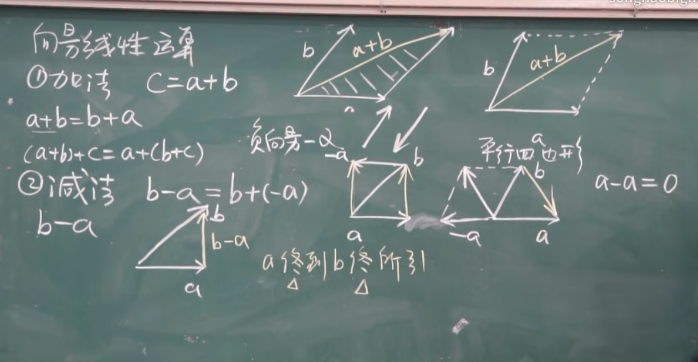
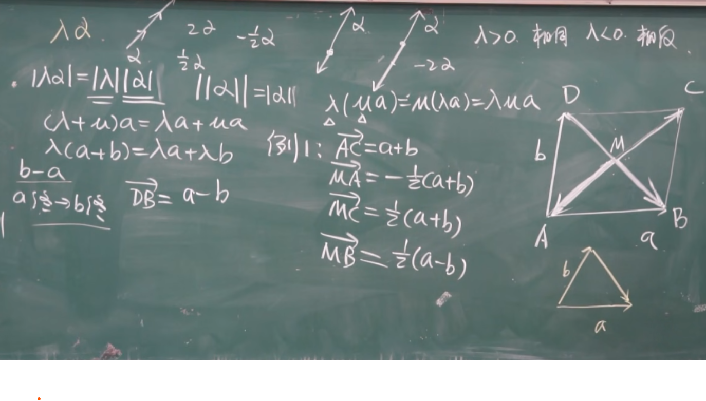
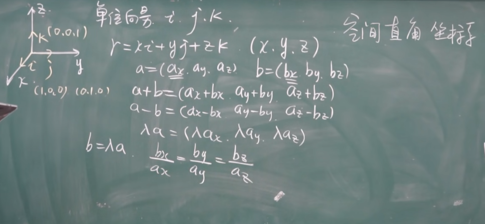
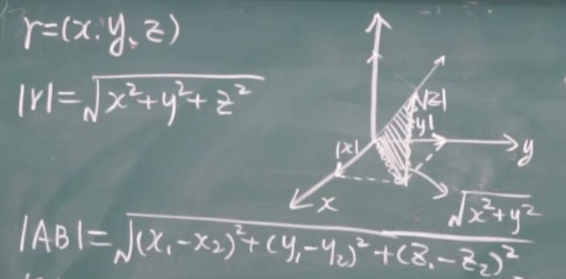
方向余弦
我们有时只考虑方向，我们可以把它归一化：这需要：
其中：$r=\sqrt{x^2+y^2+z^2}$
有时也这样记：
由于这样，我们可以把任意向量拆解为方向向量和长度的数量积
投影
定义
我们实际上可以使用如下的公式来计算一个向量在另一个向量的投影
$\varphi$ 是两个向量的夹角
性质：
数量积
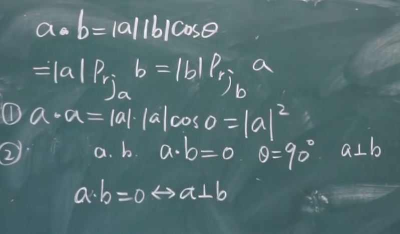
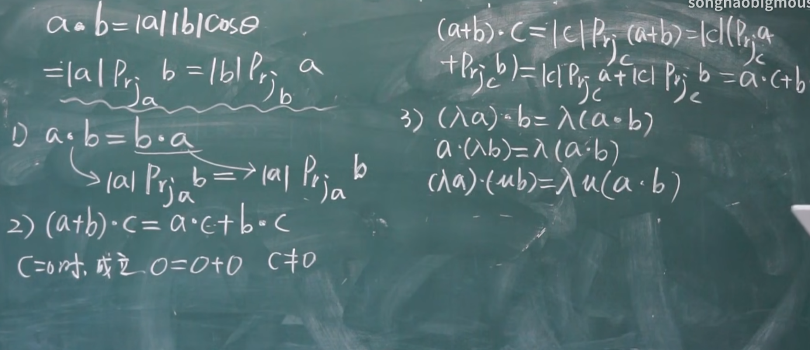
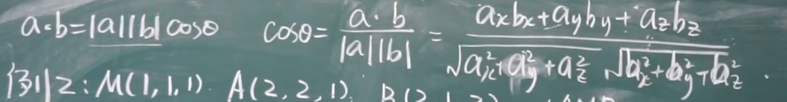
向量积
这是我们不熟悉的：
首先模长是：
方向：右手从a到b。
注意结果是一个向量！
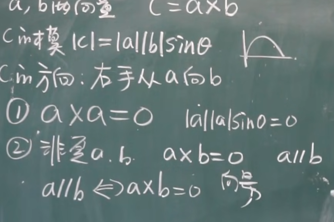
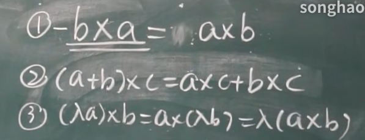
平面
曲面
曲面可以看成运动曲线的结果，我们常常使用方程：
来描述！
由此，曲线可以视作两个曲面的交：
其法线垂直于平面。
求解
点法式
如果我们已知一个点和一个法线：我们可以求出方程：
已知：$n(A,B,C)，M(x_0,y_0,z_0)$
一般式
拆开上面的式子，将常数化作一个指标D
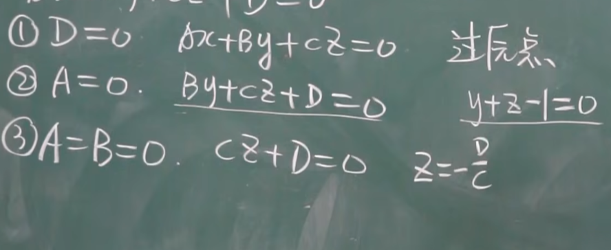
平面的夹角
我们回忆高中两直线的夹角：
平面是一样的：
只不过：
推广了一个维度！
空间直线与方程
回到这个概念：
曲线可以视作两个曲面的交：
直线就是：
对称式
如果已知：$M(x_0,y_0,z_0),S(m,n,p)$则：
参数式
就是在对称式的基础上加上了等于T的条件！
平面与直线的夹角
类似的，我们可以得到：
于是：
曲面
旋转曲面
由曲线旋转产生
假设我们原先的曲线的方程是：$f(y,z)=0$，他显然位于$yOz$平面上，其上有一点:$M_1(0,y_1,z_1)$
旋转之后：$M(x,y,z)$一定有：
于是：
相同的办法推理：对于$f(y,z)=0$绕Y轴旋转：
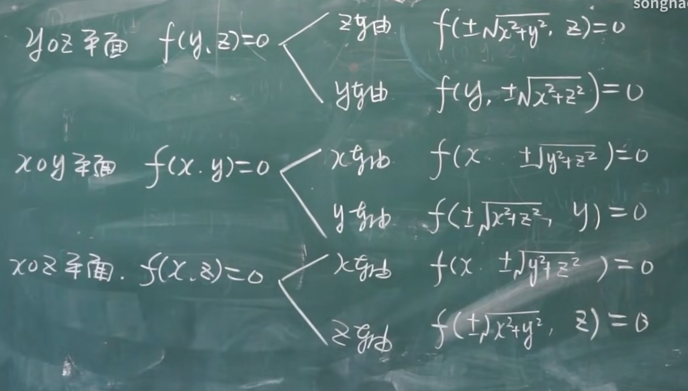
绕谁转，谁不变：剩下两个在旁边。
曲面类型
柱面：
把一个平面作为准线，沿一条线（母线）移动：
是一个代表
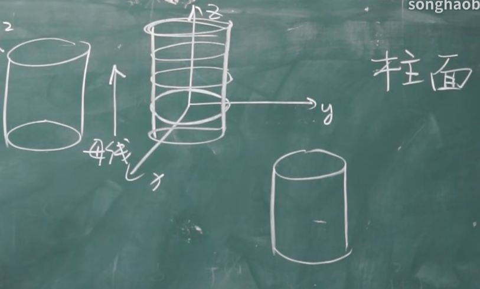
如果是抛物线：就产生抛物面：
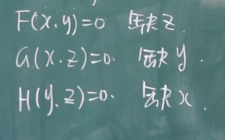
缺什么以什么为准线移动！
二次曲面
1）椭圆锥面
只要令$z=t$，我们马上发现这就是个椭圆
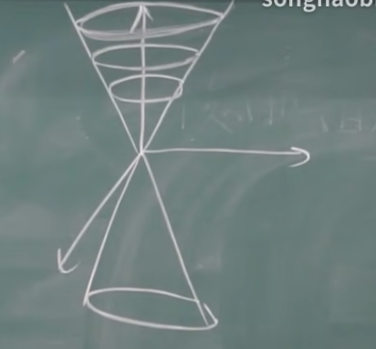
这里引入伸缩的概念：我们对变量可以伸缩：拉长或缩短，直接是令$y’=\lambda y$带入方程来看
2）椭球面
3)单叶双曲面
本质上是$\frac{x^2}{a^2}-\frac{z^2}{c^2}=1$先绕Y轴旋转，随后伸缩$\frac{b}{a}$倍数
4）双叶双曲面
5）椭圆抛物面：
可以看作一个$P^2=C$的类抛物线看待
6）双曲抛物面